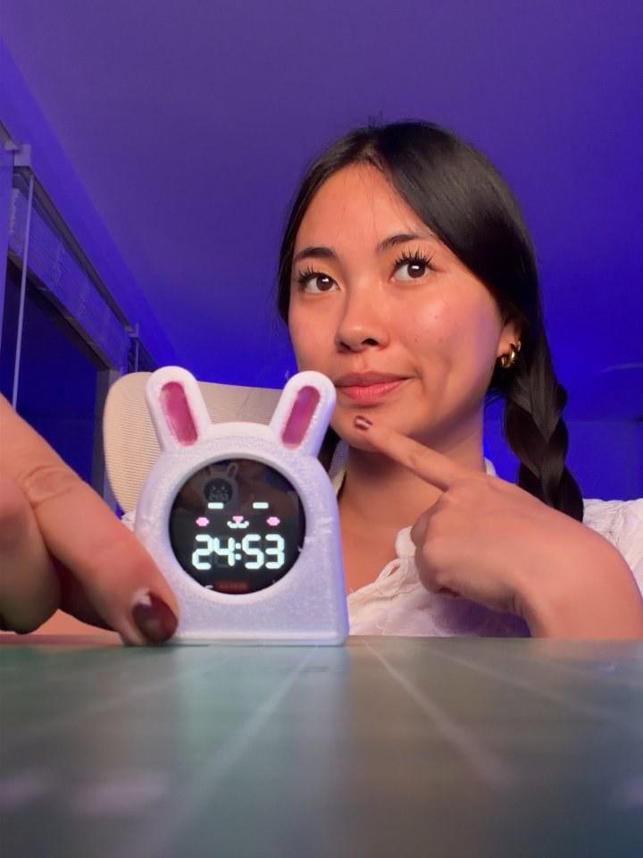
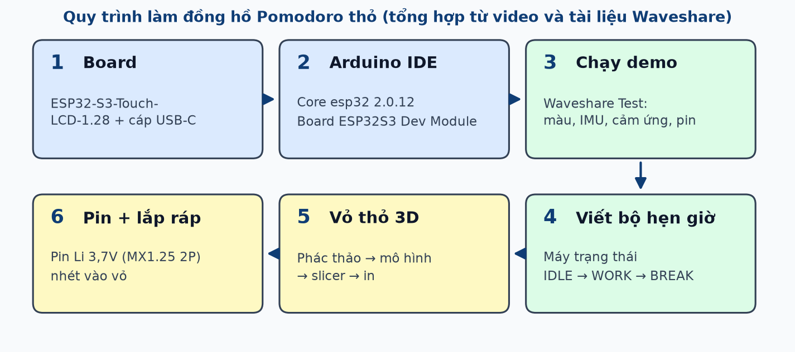

Tự làm đồng hồ Pomodoro hình thỏ bằng ESP32: hướng dẫn từng bước
Đây là bài hướng dẫn tổng hợp, không phải bản dịch nguyên văn: bản gốc là một video ngắn không có lời hướng dẫn chi tiết, và bản hướng dẫn đầy đủ của tác giả chỉ gửi riêng khi bình luận “bunny”. Nội dung dựa trên bài đăng trên X, bài đăng trước đó của cô, wiki Waveshare và mã demo của hãng. Phần tiếng Anh do người viết soạn. Hình ảnh trích từ video của tác giả, thuộc về tác giả, đăng ở đây vì mục đích học tập phi thương mại và có ghi công; hình minh họa luồng làm việc do người viết vẽ.

TL;DR
- Món đồ: đồng hồ Pomodoro 25 phút hình thỏ chạy trên bo Waveshare ESP32-S3-Touch-LCD-1.28 (màn hình tròn 1,28 inch cảm ứng), lập trình bằng Arduino IDE, đặt trong vỏ thỏ in 3D.
- Các bước: cắm bo vào máy → cài Arduino IDE với core esp32 2.0.12 và Board ESP32S3 Dev Module (flash 16 MB, PSRAM QSPI) → chạy demo Waveshare → viết máy trạng thái IDLE → WORK (25 phút) → BREAK (5 phút) bắt đầu bằng một lần chạm → in vỏ → gắn pin Li 3,7 V.
- Video chỉ chiếu một đoạn mã rất ngắn; mã đầy đủ và cách vẽ mặt thỏ không công khai. Sketch trong bài là của người viết, đã biên dịch thành công nhưng chưa chạy trên bo thật.
- Tránh bẫy: không chép số chân GPIO trong đoạn mã hiện trong video (khác sơ đồ bo); đặt hẹn giờ 10 giây khi thử; kiểm tra cực pin; khâu mô hình hóa vỏ không được video nói rõ.
Cách đọc: Ở chế độ Song ngữ, rê chuột lên từng đoạn để xem tiếng Việt bên dưới. Trên điện thoại, chạm đoạn để mở/đóng bản dịch; chạm liên kết vẫn mở liên kết. Dùng phím Tab để xem bản dịch, Esc để đóng. Nút nổi góc dưới bên trái chuyển sang Toàn bộ tiếng Việt và ghi nhớ lựa chọn. Khi tắt JavaScript, cả hai ngôn ngữ được hiển thị.
Hướng dẫn từng bước
What this build is
Đây là dự án gì
Sarah Li (@sarahli) posted a 36-second video of a desk gadget she built: a bunny-shaped Pomodoro timer. You tap the round screen, a 25-minute countdown starts, and a 3D-printed bunny case holds the board. She says the video reached 1 million views on Instagram, and that people who comment “bunny” get a guide in reply.
Sarah Li (@sarahli) đăng một video dài 36 giây về món đồ để bàn do chính cô làm: đồng hồ Pomodoro hình thỏ. Bạn chạm vào màn hình tròn là đồng hồ đếm ngược 25 phút, còn bo mạch nằm trong vỏ thỏ in 3D. Cô nói video đạt 1 triệu lượt xem trên Instagram, và ai bình luận “bunny” sẽ nhận được một bản hướng dẫn.
That guide is sent privately, so it is not public. This post is a how-to rebuilt from three things we can check: what the video shows and says, Waveshare’s official wiki and demo code for the board in the video, and the Arduino and Espressif documentation. Anything that is our own addition is labelled.
Bản hướng dẫn đó được gửi riêng nên không công khai. Bài này là hướng dẫn dựng lại từ ba thứ kiểm chứng được: những gì video cho thấy và nói, wiki cùng mã demo chính thức của Waveshare cho đúng bo mạch trong video, và tài liệu của Arduino, Espressif. Phần nào do người viết tự thêm đều có ghi rõ.

1. What you need
1. Cần chuẩn bị gì
From the video and Waveshare’s documentation, the parts list is short:
Từ video và tài liệu Waveshare, danh sách linh kiện khá ngắn:
- The board: the video shows a board whose silkscreen reads
ESP32-S3-Touch-LCD-1.28. It is a Waveshare board with a 1.28-inch round capacitive touch screen (240×240, GC9A01A display, CST816S touch), an ESP32-S3R2 chip with Wi-Fi and Bluetooth 5 (BLE), 16 MB flash and 2 MB PSRAM, and a QMI8658 motion sensor. Waveshare also sells a non-touch version, so buy the Touch one. - A USB-C data cable to connect it to your computer (the video shows a white cable).
- A 3.7 V lithium battery so the timer works unplugged. Waveshare’s board has a 2-pin MX1.25 battery connector that supports charging and discharging; the video only calls it “this little battery” and gives no model.
- A 3D printer (or a print service) and filament for the two-part bunny case. The slicer on screen shows a “Bambu Textured PEI Plate”, which suggests a Bambu Lab printer, but she does not say which one.
- A computer with the free Arduino IDE.
- Bo mạch: video cho thấy một bo có chữ in
ESP32-S3-Touch-LCD-1.28. Đây là bo của Waveshare với màn hình tròn 1,28 inch cảm ứng điện dung (240×240, chip hiển thị GC9A01A, chip cảm ứng CST816S), chip ESP32-S3R2 có Wi-Fi và Bluetooth 5 (BLE), flash 16 MB, PSRAM 2 MB và cảm biến chuyển động QMI8658. Waveshare cũng bán bản không cảm ứng, nên hãy mua bản Touch. - Một cáp USB-C truyền dữ liệu để nối bo với máy tính (video cho thấy một sợi cáp trắng).
- Một pin lithium 3,7 V để đồng hồ chạy không cần cắm điện. Bo của Waveshare có cổng pin MX1.25 2 chân hỗ trợ cả sạc và xả; video chỉ gọi nó là “this little battery” và không nêu mẫu pin.
- Một máy in 3D (hoặc dịch vụ in) và sợi nhựa cho chiếc vỏ thỏ hai mảnh. Phần mềm slicer trong video hiện “Bambu Textured PEI Plate”, gợi ý một máy Bambu Lab, nhưng cô không nói rõ là máy nào.
- Một máy tính cài Arduino IDE miễn phí.
The video does not state prices, print time, or total build time. One reply under the post says printing the shell can take several hours, but that is a commenter’s remark, not the author’s figure.
Video không nêu giá, thời gian in hay tổng thời gian làm. Một người trả lời dưới bài nói in phần vỏ có thể mất vài giờ, nhưng đó là nhận xét của người bình luận, không phải con số của tác giả.
2. Meet the board
2. Làm quen với bo mạch

In the video she says: “This is an ESP32. It’s basically a tiny computer you can program. I started by plugging in the board to my computer.” Three details from Waveshare’s wiki matter for the build:
Trong video cô nói: “This is an ESP32. It’s basically a tiny computer you can program. I started by plugging in the board to my computer.” (Đây là ESP32, về cơ bản là một máy tính tí hon có thể lập trình. Tôi bắt đầu bằng cách cắm bo vào máy tính.) Ba chi tiết trong wiki Waveshare quan trọng cho dự án:
- The USB-C port goes through a CH343P USB-to-serial chip, so you flash firmware and read logs over the same cable.
- To enter download mode manually, press BOOT before RESET.
- Touch uses I2C (SDA = GPIO6, SCL = GPIO7, reset = GPIO13, interrupt = GPIO5). The backlight is GPIO2. GPIO4 and GPIO5 are also tied to two small MOSFET switches (for a vibration motor, for example), and GPIO1 reads the battery voltage.
- Cổng USB-C đi qua chip chuyển USB sang UART CH343P, nên bạn nạp chương trình và đọc log qua cùng một sợi cáp.
- Muốn vào chế độ nạp thủ công, hãy nhấn BOOT trước khi nhấn RESET.
- Cảm ứng dùng I2C (SDA = GPIO6, SCL = GPIO7, reset = GPIO13, ngắt = GPIO5). Đèn nền là GPIO2. GPIO4 và GPIO5 còn nối với hai MOSFET đóng ngắt nhỏ (ví dụ cho động cơ rung), và GPIO1 đo điện áp pin.
3. Set up Arduino IDE
3. Cài Arduino IDE
In the video she opens Arduino IDE to write the timer. Waveshare lists the exact setup for this board:
Trong video cô mở Arduino IDE để viết bộ hẹn giờ. Waveshare nêu rõ cách cài đặt cho đúng bo này:
- Download and install Arduino IDE with default options.
- In Boards Manager install “esp32 by Espressif Systems”, version 2.0.12. Waveshare says to use this exact version and says that if a demo errors, first check that the board package is 2.0.12 (see also the Espressif install guide).
- Plug in the board, then under Tools choose Board ESP32S3 Dev Module and the board’s COM port.
- Set the three options Waveshare highlights: Flash Size 16MB (128Mb), Partition Scheme 16M Flash (3MB APP/9.9MB FATFS), PSRAM QSPI PSRAM. The demo code allocates its screen buffer in PSRAM, so leaving PSRAM off will break it.
- On Windows you can find the COM port in Device Manager; on Mac, Waveshare says to install the CH34x driver if flashing fails.
- Tải và cài Arduino IDE với tùy chọn mặc định.
- Trong Boards Manager cài “esp32 by Espressif Systems”, phiên bản 2.0.12. Waveshare yêu cầu đúng phiên bản này và dặn rằng nếu demo báo lỗi thì trước hết hãy kiểm tra gói bo mạch có đúng 2.0.12 không (xem thêm hướng dẫn cài của Espressif).
- Cắm bo vào máy, rồi trong menu Tools chọn Board ESP32S3 Dev Module và cổng COM của bo.
- Đặt ba tùy chọn mà Waveshare đánh dấu: Flash Size 16MB (128Mb), Partition Scheme 16M Flash (3MB APP/9.9MB FATFS), PSRAM QSPI PSRAM. Mã demo cấp bộ đệm màn hình trong PSRAM, nên để tắt PSRAM sẽ làm chương trình lỗi.
- Trên Windows, bạn xem cổng COM trong Device Manager; trên Mac, Waveshare dặn cài driver CH34x nếu nạp bị lỗi.
Check the toolchain with Waveshare’s own first test. Create a new sketch, upload it, and open the Serial Monitor at 115200 baud; you should see a line every 2 seconds. The first compile is slow, which Waveshare says is normal.
Kiểm tra bộ công cụ bằng bài thử đầu tiên của chính Waveshare. Tạo sketch mới, nạp lên bo, rồi mở Serial Monitor ở 115200 baud; bạn sẽ thấy một dòng mỗi 2 giây. Lần biên dịch đầu rất chậm, Waveshare nói đó là bình thường.
void setup() {
Serial.begin(115200);
}
void loop() {
Serial.println("Hello, World!");
delay(2000);
}4. Run Waveshare’s demo first
4. Chạy demo của Waveshare trước
Before writing your own timer, make sure the screen, touch and battery reading work. Download ESP32-S3-Touch-LCD-1.28-Demo.zip from the Waveshare wiki (about 46 MB), open Arduino/examples/ESP32-S3-Touch-LCD-1.28-Test and upload it with the settings above.
Trước khi viết bộ hẹn giờ riêng, hãy chắc chắn màn hình, cảm ứng và phần đọc pin chạy được. Tải ESP32-S3-Touch-LCD-1.28-Demo.zip từ wiki Waveshare (khoảng 46 MB), mở thư mục Arduino/examples/ESP32-S3-Touch-LCD-1.28-Test rồi nạp với các thiết lập ở trên.
According to Waveshare, the test shows white, red, green and blue for 2 seconds each (to spot dead pixels), then the motion-sensor values (ACC and GYR) and the battery voltage (BAT(V)), then a touch test where tapping the white area draws dots. Long-pressing the red area at the top ends the sensor page.
Theo Waveshare, bài thử hiện lần lượt trắng, đỏ, xanh lá, xanh dương mỗi màu 2 giây (để tìm điểm ảnh chết), rồi giá trị cảm biến chuyển động (ACC và GYR) cùng điện áp pin (BAT(V)), sau đó là bài thử cảm ứng: chạm vào vùng trắng sẽ vẽ chấm. Nhấn giữ vùng đỏ phía trên để thoát trang cảm biến.
This demo folder is also your starting library: it contains the display driver (LCD_1in28), the drawing helpers (GUI_Paint, fonts), the touch driver (CST816S) and the pin setup (DEV_Config) that the timer below reuses.
Thư mục demo này cũng là thư viện khởi đầu của bạn: nó chứa trình điều khiển màn hình (LCD_1in28), hàm vẽ (GUI_Paint, phông chữ), trình điều khiển cảm ứng (CST816S) và phần khai báo chân (DEV_Config) mà bộ hẹn giờ bên dưới dùng lại.
5. Write the timer
5. Viết bộ hẹn giờ

In the video: “I want to be able to tap the screen and have it start a 25 minute countdown.” A few lines of code flash over the footage. Reading them frame by frame, this is what is visible:
Trong video: “I want to be able to tap the screen and have it start a 25 minute countdown.” (Tôi muốn chạm vào màn hình là nó bắt đầu đếm ngược 25 phút.) Vài dòng mã hiện thoáng qua trên hình. Đọc từng khung hình, phần nhìn thấy được là:
const int BUTTON_PIN = 4;
const int BUZZER_PIN = 5;
const int RGB_PIN = 48; // DevKitC-1 v1.1 uses 48,
// Shorten these while testing, like 10 seconds each
const unsigned long WORK_MS = 25UL * 60UL * 1000UL;
const unsigned long BREAK_MS = 5UL * 60UL * 1000UL;
enum State { IDLE, WORK, BREAK };Phần mã nhìn thấy được trong video (chép lại từ hình, chỉ là đoạn đầu của chương trình).
Two lessons here. First, the design is a small state machine: IDLE waits for a tap, WORK counts 25 minutes, BREAK counts 5. Second, the comment “shorten these while testing” is good advice: set both to about 10 seconds while you debug. But do not copy the pin numbers. That snippet mentions an ESP32-S3-DevKitC-1 with a button, a buzzer and an RGB LED, which is a different pin layout. On the Waveshare round board, GPIO4 and GPIO5 are already used by the motion sensor, the touch interrupt and the two MOSFET switches.
Hai bài học ở đây. Thứ nhất, thiết kế là một máy trạng thái nhỏ: IDLE chờ chạm, WORK đếm 25 phút, BREAK đếm 5 phút. Thứ hai, dòng chú thích “shorten these while testing” (rút ngắn khi thử) là lời khuyên hay: hãy đặt cả hai còn khoảng 10 giây trong lúc gỡ lỗi. Nhưng đừng chép số chân. Đoạn mã đó nhắc tới ESP32-S3-DevKitC-1 có nút bấm, còi và đèn RGB, tức là một sơ đồ chân khác. Trên bo tròn của Waveshare, GPIO4 và GPIO5 đã được dùng cho cảm biến chuyển động, ngắt cảm ứng và hai MOSFET.
The rest of her code is not shown, so the sketch below is our own, written for the Waveshare board by following the Test demo’s own setup (same touch pins, same buffer in PSRAM, same drawing calls) and the IDLE/WORK/BREAK structure above. We compiled it with arduino-cli against esp32 core 2.0.12 with the board settings from step 3, and it built successfully. We have not run it on a physical board, so treat it as a starting point.
Phần còn lại trong mã của cô không được chiếu ra, nên sketch bên dưới là của người viết, soạn cho bo Waveshare theo đúng cách khởi tạo của demo Test (cùng chân cảm ứng, cùng bộ đệm trong PSRAM, cùng hàm vẽ) và cấu trúc IDLE/WORK/BREAK ở trên. Chúng tôi đã biên dịch nó bằng arduino-cli với esp32 core 2.0.12 và các thiết lập bo ở bước 3, và biên dịch thành công. Chúng tôi chưa chạy nó trên bo thật, nên hãy xem đây là điểm khởi đầu.
// Pomodoro timer for the Waveshare ESP32-S3-Touch-LCD-1.28.
// Built on Waveshare's "ESP32-S3-Touch-LCD-1.28-Test" demo files (DEV_Config, LCD_1in28,
// GUI_Paint, CST816S ...). Put this .ino in a copy of that demo folder, next to those files.
#include <Arduino.h>
#include "LCD_Test.h"
// Shorten these while testing, like 10 seconds each
const unsigned long WORK_MS = 25UL * 60UL * 1000UL;
const unsigned long BREAK_MS = 5UL * 60UL * 1000UL;
enum State { IDLE, WORK, BREAK };
State state = IDLE;
unsigned long phaseStart = 0;
long lastShown = -1;
UWORD *Frame; // 240x240 RGB565 frame buffer in PSRAM
CST816S touch(6, 7, 13, 5); // sda, scl, rst, irq (same as the Waveshare demo)
void drawText(const char *big, const char *small) {
Paint_Clear(BLACK);
Paint_DrawString_EN(120 - strlen(big) * 17 / 2, 100, big, &Font24, BLACK, WHITE); // Font24 is 17 px wide
if (small) Paint_DrawString_EN(120 - strlen(small) * 11 / 2, 135, small, &Font16, BLACK, WHITE); // Font16 is 11 px wide
LCD_1IN28_Display(Frame);
}
void enter(State s) {
state = s;
phaseStart = millis();
lastShown = -1;
if (s == IDLE) drawText("Tap", "to start");
}
void setup() {
Serial.begin(115200);
touch.begin();
psramInit();
Frame = (UWORD *)ps_malloc(LCD_1IN28_HEIGHT * LCD_1IN28_WIDTH * 2);
if (Frame == NULL) { Serial.println("No PSRAM buffer"); while (true) delay(1000); }
DEV_Module_Init();
LCD_1IN28_Init(HORIZONTAL);
Paint_NewImage((UBYTE *)Frame, LCD_1IN28.WIDTH, LCD_1IN28.HEIGHT, 0, BLACK);
Paint_SetScale(65);
Paint_SetRotate(ROTATE_0);
enter(IDLE);
}
void loop() {
bool tapped = touch.available();
if (state == IDLE) {
if (tapped) enter(WORK); // a tap starts the 25-minute countdown
} else {
unsigned long limit = (state == WORK) ? WORK_MS : BREAK_MS;
unsigned long elapsed = millis() - phaseStart;
if (tapped && elapsed > 1000) { // ignore the touch event that started this phase
enter(IDLE); // a tap while running cancels
} else if (elapsed >= limit) {
enter(state == WORK ? BREAK : IDLE); // work -> break -> idle
} else {
long left = (limit - elapsed) / 1000;
if (left != lastShown) { // redraw once per second
lastShown = left;
char buf[8];
snprintf(buf, sizeof(buf), "%02ld:%02ld", left / 60, left % 60);
drawText(buf, state == WORK ? "focus" : "break");
}
}
}
delay(20);
}Sketch BunnyTimer.ino (người viết). Tải về: files/BunnyTimer.ino.
How to use it: copy the whole ESP32-S3-Touch-LCD-1.28-Test folder, rename the copy to BunnyTimer, delete the original .ino inside, and add BunnyTimer.ino (Arduino requires the folder and the main .ino to share a name). Open it, apply the board settings from step 3, set the two durations to 10 seconds, upload, tap the screen, and watch the count. When it behaves, restore 25 and 5 minutes.
Cách dùng: sao chép toàn bộ thư mục ESP32-S3-Touch-LCD-1.28-Test, đổi tên bản sao thành BunnyTimer, xóa tệp .ino gốc bên trong, rồi thêm BunnyTimer.ino (Arduino yêu cầu tên thư mục và tệp .ino chính trùng nhau). Mở lên, áp dụng thiết lập bo ở bước 3, đặt hai khoảng thời gian còn 10 giây, nạp, chạm màn hình và xem đồng hồ đếm. Khi chạy ổn thì trả lại 25 và 5 phút.
How the sketch works: a tap in IDLE starts WORK; when the 25 minutes are up it moves to BREAK, then back to IDLE; a tap while running cancels. The time is measured with millis() and the screen is redrawn once per second. Taps in the first second of a phase are ignored, because the touch chip can raise more than one event for one tap.
Cách sketch hoạt động: chạm khi đang IDLE sẽ bắt đầu WORK; hết 25 phút thì chuyển sang BREAK, rồi quay về IDLE; chạm khi đang chạy sẽ hủy. Thời gian đo bằng millis() và màn hình vẽ lại mỗi giây. Lần chạm trong giây đầu của mỗi pha bị bỏ qua, vì chip cảm ứng có thể phát nhiều sự kiện cho một lần chạm.
The cute part is not documented. In the video the screen shows a bunny face (ears, eyes and cheeks) with seven-segment-style digits, and the final timer shows pink digits under a different face. How she drew these is not shown. The demo’s GUI_Paint library has Paint_DrawImage() for RGB565 bitmaps, so one workable route is to convert your own face images to arrays and draw the digits on top. That is a suggestion, not her method.
Phần dễ thương thì không có tài liệu. Trong video, màn hình hiện mặt thỏ (tai, mắt, má hồng) với chữ số kiểu bảng bảy đoạn, và chiếc đồng hồ hoàn chỉnh có chữ số hồng dưới một khuôn mặt khác. Cô vẽ chúng thế nào thì video không cho thấy. Thư viện GUI_Paint trong demo có hàm Paint_DrawImage() cho ảnh bitmap RGB565, nên một hướng khả thi là đổi ảnh khuôn mặt của bạn thành mảng dữ liệu rồi vẽ chữ số lên trên. Đó là gợi ý của người viết, không phải cách của cô.
6. Design and print the bunny case
6. Thiết kế và in vỏ thỏ

She says: “Once the timer was working, I sketched out a little bunny case and 3D printed it.” The video shows three things: a hand-drawn bunny on paper, a slicer window with two flat parts laid out on a print plate, and two white printed pieces held up to the camera (a ring with a round window for the screen, and a back tray).
Cô nói: “Once the timer was working, I sketched out a little bunny case and 3D printed it.” (Khi bộ hẹn giờ chạy được, tôi phác một chiếc vỏ thỏ nhỏ rồi in 3D.) Video cho thấy ba thứ: hình thỏ vẽ tay trên giấy, cửa sổ slicer với hai chi tiết đặt trên khay in, và hai mảnh vỏ trắng đã in xong được giơ lên trước camera (một vòng có ô tròn cho màn hình và một khay phía sau).
The step between the paper sketch and the printable file is not shown, so a method has to come from you. In an earlier post (11/11/2026) she wrote that she programmed ESP32 boards and “used replit to design cases for them, then 3D printed them”. That is about her other boards, not stated for the bunny, but it is a lead. A generic route that works for any enclosure:
Bước từ bản phác trên giấy đến tệp in được không xuất hiện trong video, nên bạn phải tự chọn cách làm. Trong một bài trước (11/11/2026), cô viết rằng mình lập trình các bo ESP32 và “used replit to design cases for them, then 3D printed them” (dùng Replit để thiết kế vỏ rồi in 3D). Câu đó nói về các bo khác của cô, không nêu riêng cho chú thỏ này, nhưng là một manh mối. Một cách chung dùng được cho mọi loại vỏ:
- Measure the real board (diameter, thickness, USB-C position, battery connector) with calipers. The wiki gives the screen size as Φ32.4 mm but the full outline is only in its dimension drawing.
- Model a front ring with a round window for the screen, and a back tray with a cut-out for the USB-C port. Add the bunny ears and body outline from your sketch, and leave a small tolerance.
- Export an STL or 3MF, open it in your slicer (hers looks like Bambu Studio), place both parts flat, and print.
- Print a test fit first; round displays and USB ports are the usual sources of a bad fit.
- Đo bo thật (đường kính, độ dày, vị trí USB-C, đầu cắm pin) bằng thước kẹp. Wiki ghi kích thước màn hình là Φ32,4 mm nhưng đường viền toàn bo chỉ có trong bản vẽ kích thước.
- Dựng vòng mặt trước có ô tròn cho màn hình và khay phía sau có khoét chỗ cổng USB-C. Thêm tai và thân thỏ từ bản phác, và chừa dung sai nhỏ.
- Xuất tệp STL hoặc 3MF, mở trong slicer (slicer của cô trông giống Bambu Studio), đặt hai chi tiết nằm phẳng rồi in.
- In thử một lần để kiểm tra độ khớp; màn hình tròn và cổng USB thường là chỗ dễ lệch nhất.
7. Add the battery and assemble
7. Gắn pin và lắp ráp

She says: “You can also get this little battery so your timer can run without being plugged in.” On this board the battery goes into the MX1.25 2-pin connector, which handles both charging and discharging, so you can charge it from the same USB-C cable. Waveshare’s wiki shows its own 3.7 V 600 mAh battery with the board; the video does not tell which battery she uses, so choose a size that fits your case.
Cô nói: “You can also get this little battery so your timer can run without being plugged in.” (Bạn cũng có thể mua viên pin nhỏ này để đồng hồ chạy khi không cắm điện.) Trên bo này, pin cắm vào đầu MX1.25 hai chân, vừa sạc vừa xả được, nên bạn có thể sạc qua chính sợi cáp USB-C. Wiki Waveshare có ảnh bo đi kèm pin 3,7 V 600 mAh của hãng; video không cho biết cô dùng pin nào, nên hãy chọn cỡ pin vừa với vỏ của bạn.
- Check the polarity of the battery plug against Waveshare’s wiki and schematic before plugging it in. A reversed lithium cell is a real hazard. This is our safety note, not a step from the video.
- The board reads battery voltage on GPIO1 through a divider. Waveshare gives the conversion for a raw 12-bit reading as
3.3 / (1 << 12) * 3 * AD_Value, and the Test demo printsBAT(V), so you can compare it with a multimeter. - Fit the board into the case with the battery tucked behind it, close the case, and run the timer once unplugged to confirm it keeps counting.
- Kiểm tra cực của đầu cắm pin theo wiki và sơ đồ mạch của Waveshare trước khi cắm. Cắm ngược cực với pin lithium là rủi ro thật. Đây là lưu ý an toàn của người viết, không phải bước trong video.
- Bo đo điện áp pin ở GPIO1 qua một cầu chia áp. Waveshare nêu công thức đổi giá trị ADC 12 bit thô là
3.3 / (1 << 12) * 3 * AD_Value, và demo Test in giá trịBAT(V), nên bạn có thể đối chiếu với đồng hồ vạn năng. - Đặt bo vào vỏ với pin nằm phía sau, đóng vỏ rồi chạy thử đồng hồ một lần khi rút cáp để chắc rằng nó vẫn đếm.
8. Tips and pitfalls
8. Mẹo và lỗi thường gặp
- Match versions: esp32 core 2.0.12, and the three Tools options (16 MB flash, 16M partition, QSPI PSRAM). Most “it does not compile or boot” cases start here.
- Flash will not start? Hold BOOT, tap RESET, then upload again; and try another cable, because charge-only cables are common.
- Test first with 10-second timers, as her own comment suggests, then switch to 25 and 5 minutes.
- Do not reuse GPIO4 or GPIO5 for buttons or a buzzer without reading the schematic: on this board they are connected to the motion sensor, the touch interrupt and the MOSFET outputs.
- Want a buzzer or vibration? The two MOSFET outputs (GPIO4, GPIO5) are meant for small devices such as a vibration motor, per the wiki. Check the schematic and current limits before soldering.
- Prefer Python? Waveshare also documents a MicroPython path with Thonny and a
cst816.pytouch driver. We did not test it for a timer.
- Khớp phiên bản: esp32 core 2.0.12 và ba tùy chọn trong Tools (flash 16 MB, phân vùng 16M, QSPI PSRAM). Phần lớn lỗi “không biên dịch hoặc không khởi động” bắt đầu từ đây.
- Không nạp được? Giữ BOOT, nhấn RESET rồi nạp lại; và thử cáp khác, vì cáp chỉ sạc rất phổ biến.
- Thử trước với bộ hẹn 10 giây như chính chú thích của cô gợi ý, rồi mới chuyển sang 25 và 5 phút.
- Đừng dùng lại GPIO4 hay GPIO5 cho nút bấm hay còi khi chưa đọc sơ đồ mạch: trên bo này chúng nối với cảm biến chuyển động, ngắt cảm ứng và đầu ra MOSFET.
- Muốn có còi hay rung? Hai đầu ra MOSFET (GPIO4, GPIO5) được thiết kế cho thiết bị nhỏ như động cơ rung, theo wiki. Hãy xem sơ đồ mạch và giới hạn dòng điện trước khi hàn.
- Thích Python hơn? Waveshare cũng có hướng MicroPython với Thonny và trình điều khiển cảm ứng
cst816.py. Chúng tôi chưa thử làm bộ hẹn giờ theo hướng này.
To adapt it to your own setup, change the durations, the face and the case shape, and keep the same three pieces: a screen with touch, a state machine, and a battery. If you get stuck on the code, giving the pin table above to an AI coding assistant is a reasonable way to draft a new sketch; compile and test it as you would any other.
Để làm theo cách riêng, bạn đổi thời lượng, khuôn mặt và hình dáng vỏ, nhưng giữ nguyên ba thành phần: màn hình có cảm ứng, một máy trạng thái và một viên pin. Nếu kẹt ở phần mã, đưa bảng chân ở trên cho một trợ lý AI viết mã để soạn sketch mới là cách hợp lý; hãy biên dịch và thử như với mọi mã khác.
Takeaway: build the timer in layers: get the board and screen working with Waveshare’s demo, then a tiny state machine, then the case, then the battery.Điểm rút ra: làm theo từng lớp: cho bo và màn hình chạy bằng demo của Waveshare, rồi một máy trạng thái nhỏ, rồi vỏ, rồi pin.Know-how & Insight
Ghi chú và lưu ý của người dịch
- Nguồn gốc nội dung. Bài gốc chỉ là một video 36 giây kèm câu “this got 1 million views on instagram”. Con số 1 triệu lượt xem là lời tác giả nói, người viết không kiểm chứng được. Lời thoại trong bài được chép từ chính âm thanh video; các chi tiết về bo mạch lấy từ wiki và mã demo của Waveshare, hai nguồn này khớp với bo trong hình (chữ in
ESP32-S3-Touch-LCD-1.28). - Những gì video và tài liệu không nói. Mã nguồn đầy đủ, cách vẽ mặt thỏ và chữ số, kiểu và dung lượng pin, mô hình 3D, cài đặt in, giá linh kiện, thời gian làm. Hướng dẫn gốc chỉ gửi qua bình luận “bunny”, người viết không có bản đó nên không suy diễn nội dung của nó.
- Đoạn mã trong video chỉ là một mảnh. Các số chân (4, 5, 48) trùng với bo DevKitC-1 chứ không phải bo tròn Waveshare, nên có thể đây là mã minh họa hoặc từ phiên bản khác của dự án. Đừng chép số chân; hãy dùng bảng chân trong wiki Waveshare.
- Sketch trong bài do người viết soạn. Nó được biên dịch bằng arduino-cli với esp32 core 2.0.12 (FQBN
esp32:esp32:esp32s3, PSRAM bật, flash 16 MB, phân vùng app3M_fat9M_16MB) và biên dịch thành công, chỉ có cảnh báo trong thư viện Waveshare. Việc hiển thị, độ nhạy chạm và độ chính xác thời gian chưa được thử trên phần cứng. Màn hình của bạn có thể cần chỉnh vị trí chữ. - Về vỏ in 3D. Video không chỉ ra phần mềm thiết kế. Bài trước của cô nhắc Replit cho các vỏ ESP32 nói chung, và màn hình slicer có khay “Bambu Textured PEI Plate”; người viết chỉ ghi lại hai chi tiết này, không khẳng định chúng áp dụng cho chú thỏ.
- An toàn với pin lithium. Kiểm tra cực và dòng sạc theo tài liệu hãng, không để vỏ ép lên pin, và đừng để pin bị chọc thủng hay quá nóng. Đây là lưu ý thông thường của người viết.
- Liên hệ các bài cùng chủ đề trên blog. Nếu muốn học phần cứng cùng nhóm, xem “Học phần cứng cùng nhau”; về thiết kế mạch và vòng làm việc với AI cho đồ vật lý, xem “ChatGPT & Codex cho kỹ thuật thế giới vật lý”; về cách mô tả mục tiêu rồi để bot lo quy trình, xem “Tự động hóa mọi thứ với Grok Bot”.
Đây là phân tích bổ sung của người dịch, không phải phần nguyên văn hay khuyến nghị đã được tác giả xác nhận.
Mindmap — Đồng hồ Pomodoro thỏ bằng ESP32
mindmap
root((Đồng hồ Pomodoro thỏ ESP32))
Linh kiện
Bo Waveshare ESP32-S3-Touch-LCD-1.28
Cáp USB-C truyền dữ liệu
Pin Li 3,7V đầu MX1.25
Máy in 3D
Cài đặt
Arduino IDE
Core esp32 2.0.12
ESP32S3 Dev Module
Flash 16MB và PSRAM QSPI
Kiểm tra
Hello World qua Serial
Demo Test của Waveshare
Màu, cảm biến, cảm ứng, điện áp pin
Lập trình
Chạm để bắt đầu
IDLE
WORK 25 phút
BREAK 5 phút
Rút ngắn 10 giây khi thử
Vỏ thỏ
Phác thảo
Mô hình 3D
Slicer
In hai mảnh
Lưu ý
Không chép chân GPIO trong video
Kiểm tra cực pin
Hướng dẫn gốc gửi riêng
Sketch chưa chạy trên bo thật
Nguồn gốc: “my bunny pomodoro timer build!” và bài trước đó của Sarah Li (@sarahli) trên X; wiki ESP32-S3-Touch-LCD-1.28 và mã demo của Waveshare; Arduino IDE; Arduino-ESP32 của Espressif. Video, ảnh chụp từ video và dự án thuộc về tác giả; mã demo thuộc về Waveshare; bài viết tiếng Việt đăng trên blog này vì mục đích học tập.